Author: Toshihiro Kamiya Date: 2008/May/7 Contact: info@ccfinder.net Copyright: 2005-2008 ( C ) Toshihiro Kamiya. All rights reserved.
Contents
Specify target source code from menu [File]-[Detect Clones]. That is, select a (preprocess script of) programming language and directories of the garget source code.
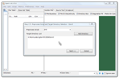
- By "Add Direcotry" button or drag-and-drop, add directories to the "Target directory list".
- CCFinderX will look up source files recursively from the directories.
In the options dialog, use default values at first. Refer the manual for detail of each option.
After that, the tool will detect code clones. When the detection finished, views of the tool will be updated.
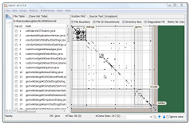 Tip: Tip: | When the detected code clones are too many, check "Use prescreening" in the optoins dialog. |
|---|
| Tip: | By default, the order of source files is a lexical order of their path (multi-byte encoding lexical oder). CCFinderX seraches a file with one of the extensions that are predefined to each programming language (For example, .c, .cc, .cpp, .cxx, .h, .hh, .hpp, .hxx for C++). In order to change the order of source files and/or specify source files with special extension, make a file list by hand (file list is a text file, which includes a path of source file per line), and use GemX's menu [File]-[Detect Clones from File List]. |
|---|
You can investigate the detected code clones with views named File Table, Clone-Set Table, Scatter Plot, and Source Text, Scrapbook, and a Search box.
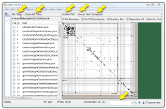| File Table: | This view shows a list of target source files. |
|---|---|
| Clone-Set Table: | |
| This view shows a list of the detected code clones. | |
| Scatter Plot: | This view shows where and how the code clones are distributed in the whole source files. |
| Source Text: | This view shows text of a source file. Code clones are illustrated as highlighted texts. |
| Scrapbook: | You can copy the code fragments shwon in Source Text view to Scrapbook. This view is almost the same as Source Text, except for Scrapbook does not follow the selection change in File Table or Clone-Set Table. |
| Search box: | Search in File Table, Clone-Set Table, Source Text, or Scrapbook. |
This view shows where and how the code clones are distributed in the whole source files. Checkboxes at the upper side of Scatter Plot are used to turn on/off boundary of source files, directory, etc. Refer the manual for the detail of each option.
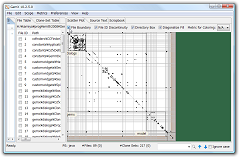Also, The list of source files are shown in File Table at the left of the Scatter Plot.
Select files by dragging. Then, from right-click menu [Fit Scope to Selected Files], you can narrow down the target files to the selected files. (This operation will also affect File Table, that is, the list of files in it will be updated.)

In order to undo this operation, use right-click menu [Pop Scope]. This option often cause missing number in File ID's. The file boundaries between such discontinuous file ID's are shown by dotted-line.
| Tip: | Files in a directory can be selecteb by clicking the upper-right corner or lower-left corner of the square corresponding to the directory. |
|---|
File Table shows a list of target source files.
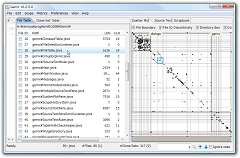For each file, the following informations are shown:
On the above of the list, a "common" path of the source files is shown. The common path is a path of the root directory of the files in the list.
You can narrow down the list, by right-click menu.
The status of narrowing-down of files can be canceled by menu [Pop Scope]
| Tip: | In order to narrow down the file list with more complex selection (for example, keep files under two directories, or keep unselected files), use check boxes at the files in File Table. Refer the manual for operations about these check boxes. |
|---|
When the File Table has focus (the focus is shown by colored frame), you can search in File List by putting file name or path in Search box. You can also select a file having a specific File ID by putting "#number" (file ID) in Search box,
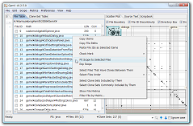When you click on Scatter Plot, the corresponding two files on vertical axis and horizontal axis will get into selected state. These files will be highlighted in File Table. By this operation, you can find out the names of the files.
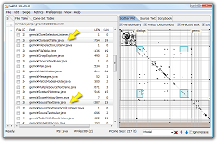This view shows text of a source file. Code clones are illustrated as highlighted text.
When you select a file by clicking in File Table, text of the file will be shown in the Source Text.

When Source Text has focus, you can search in text by putting word in Search box. You can also move to the specific line by putting "#number" (line number) in Search box.

When two (or more) files are selected in File Table or in Scatter Plot, Source Text will show two of the files.
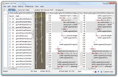Figures shown in the map are:
| Tip: | The number of panes of Source Text view (that is, the maximum number of source files shown in the view at the same time) can be changed by menu [Preferences]-[GemX Preferences]. |
|---|
By right click menu [Copy to Scrapbook] in Source Text, its text is copied to Scrapbook. The Scrapbook is not affected by selection change in File Table or Clone-Set Table, so the Scrapbook is conveninent when you are investigating code clones around a specific code fragment(s).
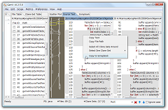Clone-Set Table shows a list of the detected code clones. A clone set is a set of code fragments, in which any pair of the code fragments is a code clone. For each clone set, ID (Clone-Set ID) and length are shown.
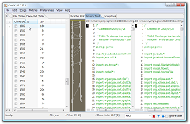Scope of Clone-Set Table is linked to scope of File Table. That is, if some files are removed from File Table by narrowing down, the enclosed code clones (whose code fragments appear only in these files) will be removed in Clone Set Table. (The reverse is not true. That is, if some code clones are removed from Clone-Set Table, the related files never be removed automatically.)
Show the Clone-Set Table at the left side, and show the Source Text at the right side, in advance.
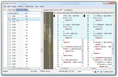| Tip: | Right-click menu [Show a Code Fragment] is used to show one code fragment of a clone set. |
|---|
File menu has menu items to save scope and file list.
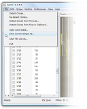| Saving scope: | A scope is a state of narrow-downing of files and code clones. Scopes are shown in Scope History at the leftmost view. |
|---|
| Saving file list: | |
|---|---|
| A file list contains paths of source files in File Table. | |
| Re-detection of clones: | |
|---|---|
| In order to detect code clones from the source files of current scope with the different detection options, use menu [File]-[Re-Detect Clones]. | |
Metrics of code clones and metrics of files will help you find interesting code clones or source files. Also, line-based metrics measures the statistics by count of lines. GemX provides narrow-downing operations with metrics.
File metrics will be shown in File Table, by menu [Metrics]-[Show File Metrics].
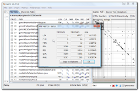| NBR (neighbor): | Count of files that have a code-clone fragment between the file. |
|---|---|
| RSA (ratio of similarity between another files): | |
| Ratio (percentage) of tokens that are covered by a code clone between the file and one of the other files. If a file has a RSA value close to 100%, then it is possible that the file was created by copying a file. | |
| RSI (ratio of similarity within the file): | |
| Ratio (percentage) of tokens that are covered by a code clone enclosed within the file. If a file has a RSI value close to 100%, then it is possible that the file contains a series of the similar functions or methods. | |
| CVR (coverage): | Ratio (percentage) of tokens that are covered by any code clone. By definition, max(RSA, RSI) <= CVR <= RSA+RSI |
| RNR (ratio of non-repeated code): | |
| Ratio of non-repeated code. 1 - (ratio of tokens appears in repetition in the text) If the value is near to zero, the code is repetition of simple statements and/or defenitions. | |
From menu [Metrics]-[Filter File by Metrics], You can narrow down the file list by the minimum and maximum values of a metric.
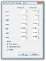| Tip: | By default, when you perform narrowing down of file list after showing file metrics, the metrics value will disappear from File Table. In order to make GemX re-calculate and show file metrics automatically after such narrowing-down, add check mark to [Calc File Metrics Always] in the dialog shown by menu [Preferences]-[GemX Prererences]. |
|---|
Clone-set metrics will be shown by menu [Metrics]-[Show Clone-Set Metrics].
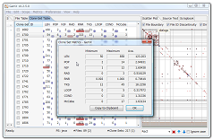| LEN (length): | Length (in token) of a code fragment of the code clone |
|---|---|
| POP (population): | |
| Count of code fragments of the code clone | |
| NIF: | Count of source files that include one or more code fragments of the code clone. By definition, NIF <= POP (This metric is imported from Gemini, developed by Yoshiki Higo, Osaka Univ..) |
| RAD (radius): | Range of the source code fragments of a code clone in the directory hierarchy. (When all the code fragments of the code clone are located in one source file, the value is 0.) |
| RNR (ratio of non-repeated tokens): | |
| Ratio (percentage) of tokens that are not included in repeated part of a code fragment of the code clone. | |
| TKS (token set size): | |
| Size of a set of tokens of a code fragment of the code clone. If a code clone has a extremely small TKS value, then the code fragment is a simple statement, such as a series of declaration of variables. | |
| LOOP, COND, McCabe: | |
| LOOP is defined as count of loops in a code fragment, COND is defined as count of conditional branches, and McCabe is defined as the sum of them. In order to focus attention on complex code, select code clones with the higher values of these metrics. | |
You can do filtering of code clones from menu [Metrics]-[Filter Clone Set by Metrics].

When clone-set metrics are calculated, each clone in scatter plot will be colored by RNR metric value (by default).

| Tip: | Just like file metrics, the clone-set metrics can be automatically re-calculated and shown by menu [Preferences]-[GemX Preferences]. |
|---|
Line-based metrics will be shown by menu [Metrics]-[Show Line-based Metrics].
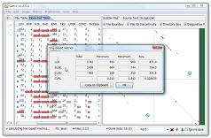| LOC: | Raw line count of the soure file. |
|---|---|
| SLOC: | Count of lines, in case of excluding lines whithout any valid tokens. Here, the "tokens" are specific to CCFinderX. (For example, definitions of simple getters/setters in Java source file will be entirely neglected by CCFinderX.) Such neglected characters are shown in green color in Source Text view. |
| CLOC: | Count of lines including at least one token of a code fragment of a code clone. |
| CVRL: | Ratio of the lines including a token of a code fragment of a code clone. CVRL = CLOC / SLOC. |
{kind=link}
{kind=link}
{kind=link}
{kind=link}
{kind=link}
{kind=link}
{kind=link}
{kind=link}
{kind=link}
{kind=link}
{kind=link}
{kind=link}
{kind=link}
{kind=link}
{kind=link}
{kind=link}
{kind=link}